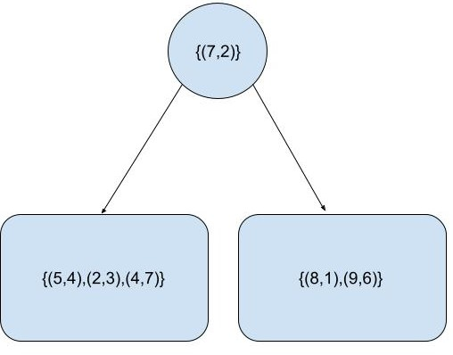
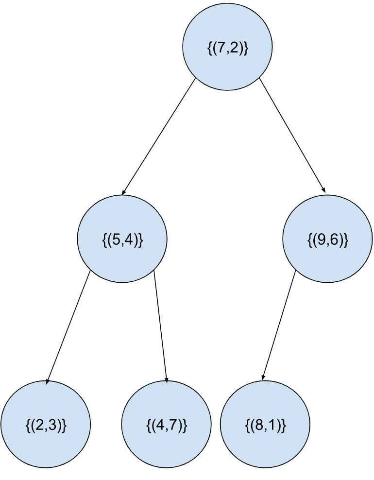
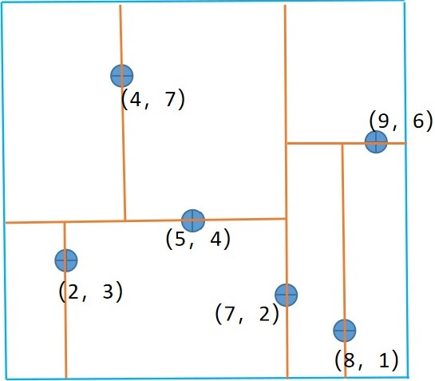
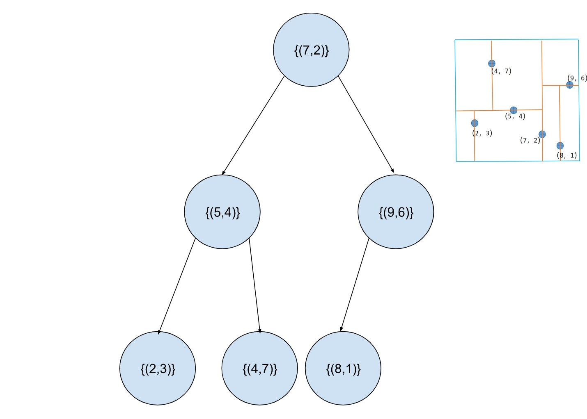
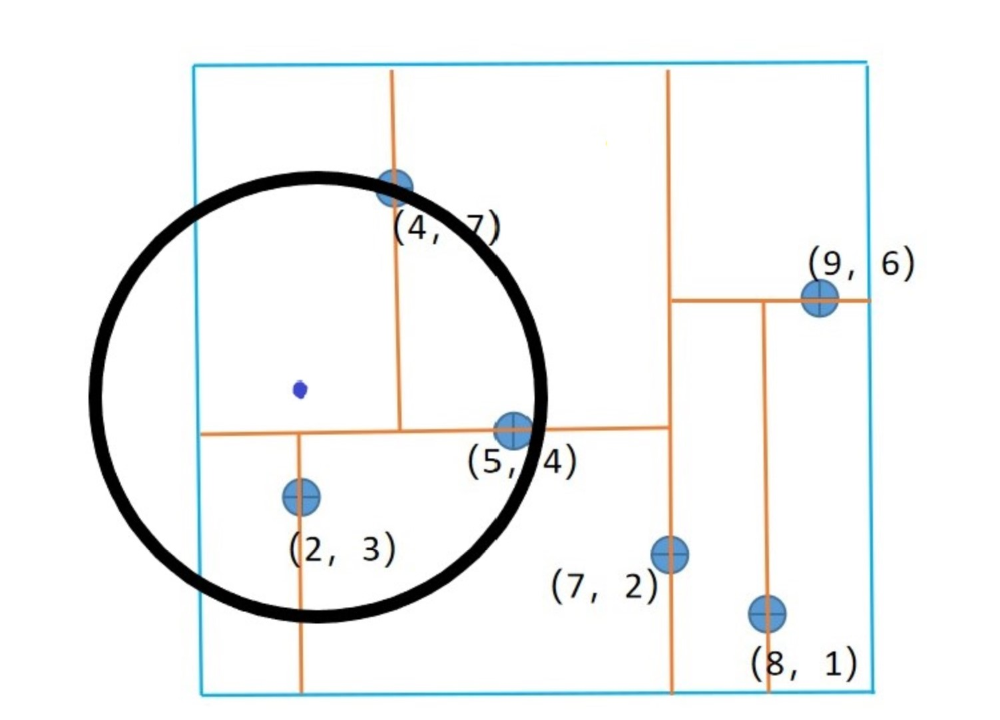
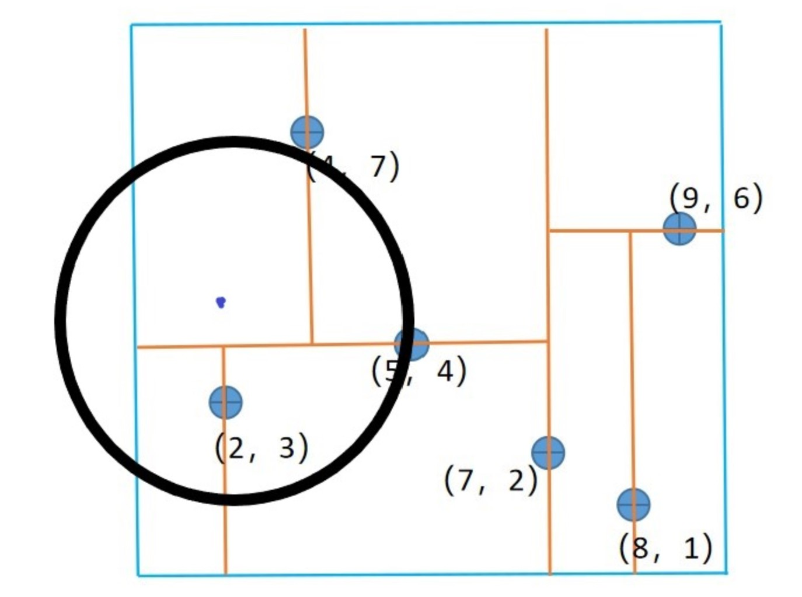
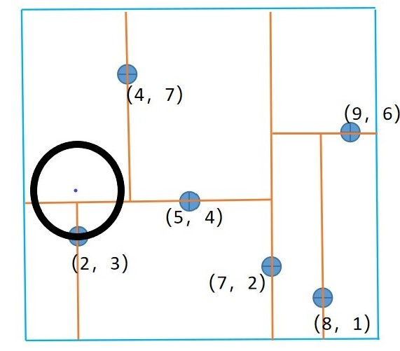

开篇
在讲解k-近邻算法的时候，我们提供的思路是：对于新到来的样本，计算该样本与训练集中所有样本之间的距离，选取训练集中距离新样本最近的k个样本中大多数样本的类别作为新的样本的类别。
也就是说，每次都要计算新的样本与训练集中全部样本的距离。但是，在实际应用中，训练集的样本量和特征维度都是比较庞大的，这就导致该算法不得不在计算距离上花费大量的时间，那有没有什么方法可以在时间开销上对之前的k-近邻算法进行优化呢？
采用以空间来换时间的思想，就引出了今天的主角：kd树。
构造kd树
kd树是一种二叉树，它可以将k维特征空间中的样本进行划分存储，以便实现快速搜索。
一头雾水？没关系，来看一个经典的构造kd树的例子。
现给定一个二维的训练集：T={（2，3），（5，4），（9，6），（4，7），（8，1），（7，2）}
要求构造一个平衡kd树
第一步，选取第0个维度作为被划分的坐标轴，并按照第0个维度从小到大排列全部样本，得到：
{（2，3），（4，7），（5，4），（7，2），（8，1），（9，6）}
第二步，找到第0个维度的中位数对应的样本。注意，这里的中位数与我们之前认知的中位数有些不同，具体表现在：对于本例，第0个维度排序后分别为：2，4，5，7，8，9。按道理中位数应该是(5+7)/2=6，但是，训练集的第0个维度中并没有6，所以，我们需要选取距离6最近的出现在训练集的第0个维度中的数字作为中位数，这里，5和7都是可以的。为了便于编程，我们就统一使用下标较大的位置的数字了: 6//2=3，所以最终选择下标为3位置的数字，即数字7作为第0个维度的中位数。
第三步，以第二步中选取的中位数为基准，并作为当前划分的父节点。将从小到大排序好的样本序列进行划分：第0个维度小于基准的样本被划分到当前划分的父节点的左子树，第0个维度大于基准的样本被划分当前划分的父节点的右子树。此时得到如下的树：

第四步，选取新的维度，按照公式 “新的划分维度=（上一次使用的维度+1）mod 特征总维数” ，得到新的维度为：(0+1) mod 2 = 1 。
于是以维度1替换维度0，重复第一步到第三步：
对左子树{(5,4),(2,3),(4,7)}按照特征的第一个维度从小到大排序：{(2,3),(5,4),(4,7)}，确定中位数下标为3//2=1，所以数字4为中位数；将(5,4)作为当前划分的父节点，第一维度大于4的作为其左子树，第一维度小于4的作为其右子树；
对右子树{(9,6),(8,1)}按照特征的第一个维度从小到大排序：{(8,1),(9,6)}，确定中位数下标为2//2=1，所以数字6为中位数；将(9,6)作为当前划分的父节点，第一维度大于6的作为其左子树，第一维度小于6的作为其右子树；
此时得到的树如下：

由于此时训练集中所有子区域都已划分完毕（任一子区域中不含样本点），因此kd树就构造完成了。
在上面的过程中，每分一次岔，就对应特征空间的一次划分（叶子节点的左右孩子都为空，但这里仍可以看成是一种特殊的分叉【左右分支都为空】）
最终整个特征空间被划分如下：
现在来用Python实现上述过程。
首先定义每个节点的数据结构：
1 | class Node(): |
然后初始化一个KD树的类：
1 | class KDTree(): |
接下来到了构建kd树的核心步骤，从之前的例子中，可以总结出我们的思路：
创建kd树的过程是递归的，所以我们可以递归地构造之：
(1) 递归地构造左子树；
(2) 递归地构造右子树；
(3) 构造父节点，将其lchild与构造好的左子树连接，将其rchild与构造好的右子树连接。
除此之外，还有一些辅助的方法，比如求指定维度的中位数，计算下一个划分维度，将会写成单独的方法以使得创建树的代码更加具有可读性。
最后，不要忘了递归出口：被划分的子区域没有样本存在时，就退出。
1 | def create_kdtree(self,current_data,split_dim): |
完整的kd树构造代码如下：
1 | class KDTree(): |
运行下面的代码，就构造好了一棵kd树：
1 | dataset = np.array([[2,3],[4,7],[5,4],[7,2],[8,1],[9,6]])#构建训练数据集 |
搜索kd树
这里仅实现最近邻搜索。所谓最近邻，就是k-近邻中k取1时的特殊情况。
我们还是以具体的例子进行说明。
基于上面构造好的kd树，现在来搜索样本点(2, 4.5)的最近邻点。
先把之前的图搬过来，对照该图阅读以下步骤会更容易理解：

从根节点开始：
- 首先来到第一层：在构造kd树时，由于(7,2)是根据维度0进行划分的，因此需要比较(2,4.5)与(7,2)的第0个维度的大小。由于2<7，因此接下来将搜索(7,2)的左子树（也就是(5,4)节点），反映到划分图上，就是去”过点(7,2)的垂直于横轴的划分线”的左侧进行接下来的搜索；
- 然后来到第二层：在构造kd树时，由于(5,4)是根据维度1进行划分的，因此需要比较(2,4.5)与(5,4)的第1个维度的大小。由于4.5>4，因此接下来将搜索(5,4)的右子树（也就是(4,7)节点），反映到划分图上，就是去”过点(5,4)的垂直于纵轴的划分线”的上侧进行接下来的搜索；
- 接着来到第三层：由于(4,7)已经是叶子节点，无左右孩子，所以从根节点(7,2)到叶子节点的搜索就完成了，当前的最近邻节点就是最后到达的叶子节点，也就是(4,7)。
- 现在，开始从叶子节点(4,7)向上往根节点进行搜索(这也称之为回溯)：
（1）以(2,4.5)为中心，以(2,4.5)到当前最近邻点(4,7)的距离为半径，画一个圆(这里特征是二维的，所以是圆。一般的，对于高维特征的情况，画出来的是一个超球面)，真正的最近邻点一定包含在这个圆的内部。于是当前最近邻点是(4,7)，最近距离为半径长度=3.2015；

(2) 从叶子节点(4,7)返回其父节点(5,4)，计算(5,4)与(2,4.5)的距离为3.0413，而3.0413<3.2015,因此当前最近邻点被更新为(5,4)，最近距离被更新为3.0413；

(3) 返回计算父节点(5,4)的另一子节点（这里也就是(2,3)），计算其与目标点(2,4.5)的距离为1.5，而1.5<3.0413，因此当前最近邻点被更新为(2，3)，最近距离被更新为1.5；

(4) 此时父节点(5,4)的另一子节点已经搜索完毕，继续向上回溯搜索那些没有被回溯过的节点，于是来到根节点(7,2)，计算(7,2)与(2,4.5)的距离为5.5901，而5.5901>1.5，因此当前最近邻点不变，最近距离也不变。由于已经回溯到了根节点，整个搜索就完毕了，当前最近邻点就是我们最终要找的最近邻点，即(2,3)。
现在，让我们用程序来实现以上的搜索过程。
基于构造kd树的代码，需要增加搜索的方法以及一些小的变动，具体如下：
- 由于在前向搜索的过程中，需要知道每个节点是根据哪个维度进行划分的，因此给每个节点增加一个维度属性：split_dim
1
2
3
4
5
6class Node():
def __init__(self,lchild,rchild,value,split_dim):
self.lchild=lchild#节点的左子树
self.rchild=rchild#节点的右子树
self.value=value#节点的数值
self.split_dim=split_dim#用来做划分的维度- 为了便于返回最近邻点和最近距离，将这两个属性添加到kd树的属性中：
1
2
3
4
5class KDTree():
def __init__(self,data):
self.dims=len(data[0])#总特征数
self.nearest_point=None
self.nearest_distance=np.inf#初始化为无穷大
- 为了便于返回最近邻点和最近距离，将这两个属性添加到kd树的属性中：
- 由于涉及到了距离的比较，因此增加计算两点之间距离的方法：
1
2
3#计算两点之间的欧氏距离
def cal_dist(sample1,sample2):
return np.sqrt(np.sum((sample1-sample2)**2)) - 算法将从根节点开始搜索，由于是递归的，所以这里可以先写一个辅助的递归入口函数，真正实现递归的算法写在另一个方法中：
1
2
3
4#element：目标节点；root：kd树的根节点
def get_nearest(self,root,element):
search(root,element)#递归地搜索
return self.nearest_point,self.nearest.dist- 现在来实现递归搜索的过程：完整代码如下：
1
2
3
4
5
6
7
8
9
10
11
12
13
14
15
16
17
18
19
20
21
22
23
24
25def search(self,node,element):
if node is None:
return
#计算当前划分维度上目标节点与当前节点的单一维度上的距离
dist = node.value[node.split_dim] - element[node.split_dim]
#前向搜索
if dist>0:#当前节点在目标节点的上侧或左侧（在二维空间中）
self.search(node.lchild,element)#递归地搜索左子树
else:#否则，当前节点在目标节点的下侧或右侧（在二维空间中）
self.search(node.rchild,element)#递归地搜索右子树
#计算目标节点与当前节点的欧氏距离
curr_dist = self.cal_dist(node.value,element)
#更新最近邻节点
if curr_dist < self.nearest_dist:
self.nearest_dist = curr_dist
self.nearest_point = node
#print(self.nearest_point.value)
#回溯
#比较“最近距离”是否超过“目标节点与当前节点在当前划分维度上的距离”，超过了就说明可能在当前节点的另一侧子树中存在更近的点，所以需要到当前节点的另一侧子树中去搜索
if self.nearest_dist > abs(dist):
#由于是去当前节点的另一侧子树中进行搜索，因此正好与之前的前向搜索相反
if dist>0:
self.search(node.rchild,element)
else:
self.search(node.lchild,element)现在来测试一下：1
2
3
4
5
6
7
8
9
10
11
12
13
14
15
16
17
18
19
20
21
22
23
24
25
26
27
28
29
30
31
32
33
34
35
36
37
38
39
40
41
42
43
44
45
46
47
48
49
50
51
52
53
54
55
56
57
58
59
60
61
62
63
64
65
66
67
68
69import numpy as np
class Node():
def __init__(self,lchild,rchild,value,split_dim):
self.lchild=lchild#节点的左子树
self.rchild=rchild#节点的右子树
self.value=value#节点的数值
self.split_dim=split_dim#用来做划分的维度
class KDTree():
def __init__(self,data):
self.dims=len(data[0])#总特征数
self.nearest_point=None
self.nearest_dist=np.inf#初始化为无穷大
def create_kdtree(self,current_data,split_dim):
#设置递归出口：当全部样本划分完毕时就退出
if len(current_data)==0:
return None
mid=self.cal_current_medium(current_data)#计算中位数所在下标
data_sorted=sorted(current_data,key=lambda x:x[split_dim])#按照切分维度从小到大排序
#下面三句代码本质上就是二叉树的后序遍历
lchild=self.create_kdtree(data_sorted[0:mid],self.cal_split_dim(split_dim))#递归地构造左子树
rchild=self.create_kdtree(data_sorted[mid+1:],self.cal_split_dim(split_dim))#递归地构造右子树
return Node(lchild,rchild,data_sorted[mid],split_dim)#连接从根节点出发的左右子树，并返回
#计算下一个划分维度
def cal_split_dim(self,split_dim):
return (split_dim+1) % self.dims
#计算当前维度中位数所在下标
def cal_current_medium(self,current_data):
return len(current_data)//2
#计算两点之间的欧氏距离
def cal_dist(self,sample1,sample2):
return np.sqrt(np.sum((sample1-sample2)**2))
#传入kd树的根节点root和待搜索的点element,搜索element的最近邻点
def search(self,node,element):
if node is None:
return
#计算当前划分维度上目标节点与当前节点的单一维度上的距离
dist = node.value[node.split_dim] - element[node.split_dim]
#前向搜索
if dist>0:#当前节点在目标节点的上侧或左侧（在二维空间中）
self.search(node.lchild,element)#递归地搜索左子树
else:#否则，当前节点在目标节点的下侧或右侧（在二维空间中）
self.search(node.rchild,element)#递归地搜索右子树
#计算目标节点与当前节点的欧氏距离
curr_dist = self.cal_dist(node.value,element)
#更新最近邻节点
if curr_dist < self.nearest_dist:
self.nearest_dist = curr_dist
self.nearest_point = node
#print(self.nearest_point.value)
#回溯
#比较“最近距离”是否超过“目标节点与当前节点在当前划分维度上的距离”，超过了就说明可能在当前节点的另一侧子树中存在更近的点，所以需要到当前节点的另一侧子树中去搜索
if self.nearest_dist > abs(dist):
#由于是去当前节点的另一侧子树中进行搜索，因此正好与之前的前向搜索相反
if dist>0:
self.search(node.rchild,element)
else:
self.search(node.lchild,element)
def get_nearest(self,root,element):
self.search(root,element)
return self.nearest_point.value,self.nearest_dist运行结果：1
2
3
4
5dataset = np.array([[2,3],[4,7],[5,4],[7,2],[8,1],[9,6]])#构建训练数据集
kdtree = KDTree(dataset)#实例化一个kd树对象
root=kdtree.create_kdtree(dataset,0)#创建KD树，且以特征的第0个维度开始做划分,最终返回的是根节点
nearest_point,nearest_dist=kdtree.get_nearest(root,[2,4.5])#搜索[2,4.5]的最近邻点
print('最近邻点：{}\n最近距离：{}'.format(nearest_point,nearest_dist))这和之前我们推导的结果是一致的。1
2最近邻点：[2 3]
最近距离：1.5
- 现在来实现递归搜索的过程：
最后，感谢互联网上的优秀资源，给本文提供了大量的参考。
参考资料：
- [1] [李航-统计学习方法]
- [2] [https://www.cnblogs.com/ssyfj/p/13053055.html#https://blog.csdn.net/app_12062011/article/details/51986805] 代码参考自此，感谢原作者
- [3] [https://www.bilibili.com/video/BV1gy4y1z7Pw?from=search&seid=13871841353290001041]
- [4] [https://www.bilibili.com/video/BV1o541137N5?from=search&seid=13871841353290001041]